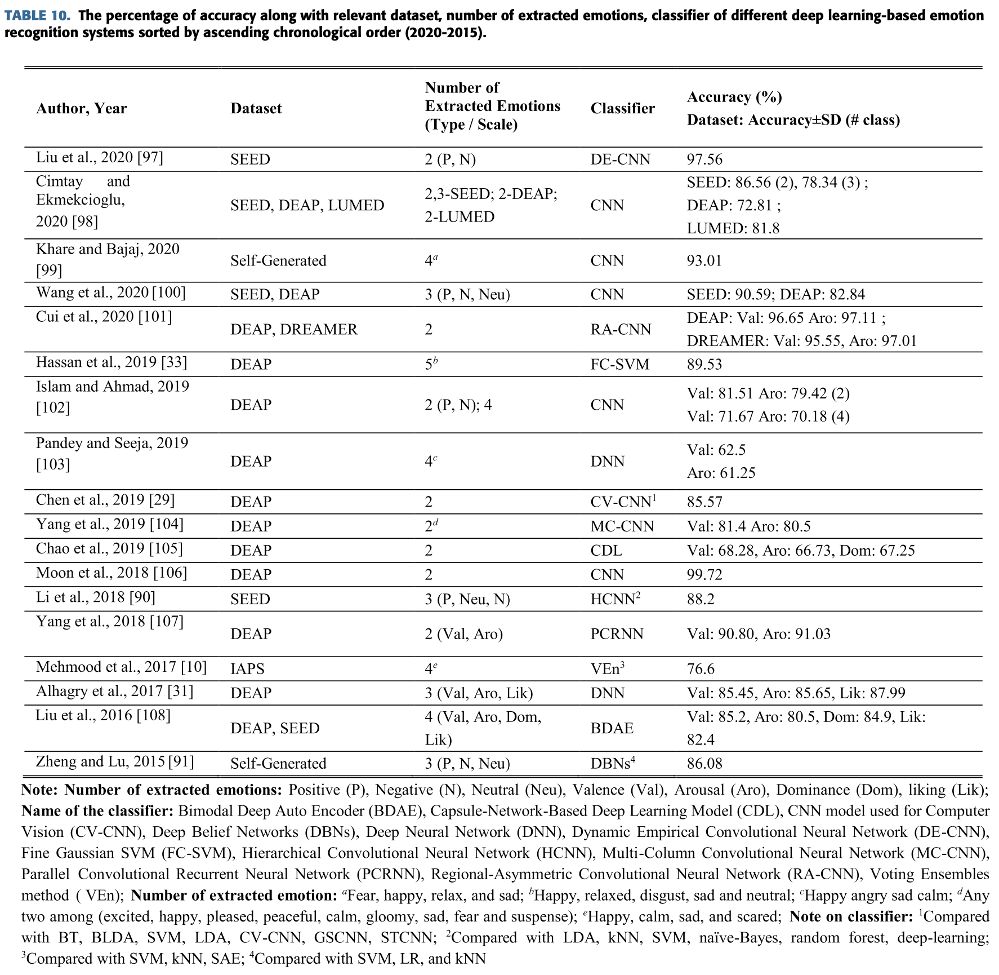
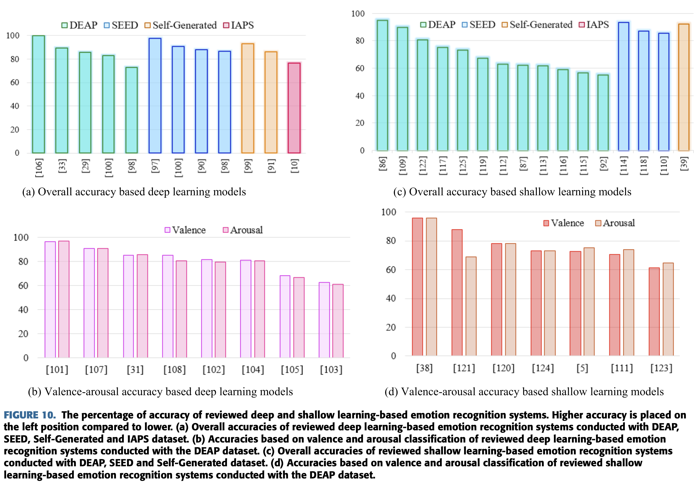

Emotion Recognition From EEG Signal Focusing on Deep Learning and Shallow Learning Techniques
Abstract
최근 electoencephalogram 기반의 감정 인식은 Human-Computer Interaction(HCI) 시스템이
더 지능화 되게 해주는 덕에 중요하게 평가되고있다.
Person-based decision making, mind-machine interfacing, cognitive interaction, affect detection,
feeling detection 등과 같이 감정 인식 기술의 놀라운 적용들 때문에
감정 인식이 과대 평가로 최근 AI 기반 연구들을 끌어들이는데 성공했다.
그러므로 많은 연구들은 어떤 작업에서 그것에 맞는 feature set들과 기술들로
방법론적 시스템 상의 검토가 이루어지는 다양한 방법의 접근을 해보는 방법으로 많은 연구가 되고 있다.
이것은 효과적인 감정 인식 시스템을 구성하는 지침서로 작용해 초보자들이 학습하도록 용이하게 쓰일 것이다.
이 논문에서 우리는 최근 출판된 감정 인식에서 최신 기술에 대한 엄격한 검토를 수행하고
적절한 프레임워크를 개발하도록 핵심적인 내용을 제공하도록 몇몇 공통된 감정인식의 단계들을
관련된 정의와 관련된 이론과 관련된 분석들을 요약할 것이다.
게다가 여기서 진행한 연구에는 두개의 카테고리로 이분화 된다.
- Deep Learning Based Emotion Recognition system
- Shallow Machine Learning Based Emotion Recognition system
검토된 시스템들은 방법, 분류기, 분류된 감정 수, 정확도 그리고 사용된 데이터셋을 기반으로 비교되었다.
앞으로 연구자들에게 방향성을 제공하기 위해 유익한 비교, 최근 연구 경향 그리고 몇 추천들을 제공할 것이다.
Index Terms
Emotion, Electroencephalogram, human0computer interaction, deep learning, shallow learning
1. Introduction
Emotion recognition은 현재 인간의 마음 상태 또는 정신의 상태를 이해하거나 추출하는 과정이다.
최근 몇년동안 뇌 신호로부터 감정을 인식하는 연구들이 상당히 많이 진행되었다.
Artificial Inelligence(AI)의 발전으로, 감정인식은
neuroscience, computer science, cognitive science와 medical science에서 없어서는 안될 분야로 자리잡았다.
비록 인간의 표정, 몸의 움직임, 제스처 등등에 대한 표현이 그 사람의 감정적 상태를 표현하지만,
자연적으로 발생하는 뇌의 Electroencephalogram(EEG) 신호로부터 원시 감정을 추출하는 것도 중요하다.
왜냐하면 인간의 생각, 사상, 꿈과 계획과 같은 타입들은 뇌의 신호에 대한 정보에서 의미를 가지고 지표를 나타낸다.
게다가, 피험자(subject)는 자연적으로 발생한 EEG 신호를 조작할 방법이 없다.
게다가, 음성, 제스쳐와 자세를 기반으로한 감정 인식은 생각을 잘 표현하기 어렵거나
육체적으로 그런 것들이 불가능한 사람들에게는 사용될 수 없다.
그러므로, EEG는 인간의 감정을 추출하는 적절한 수단이고 이미 인간 감정을 이해하는 많은 연구에 사용되고 있다.
EEG를 사용한 감정인식은 흥미롭고 빠르게 성장하는 분야이다.
결과적으로, 매해 관련된 논문의 출판이 지속적으로 증가하고 있다.
PubMed 웹사이트에서 ‘Emotion recognition from EEG’라고 검색하여 얻은 출판물의 수를 데이터로 사용했다.
그러나 EEG는 진폭이 매우 작은 신호이기 때문에 EEG로부터 감정을 인식한다는 것은 매우 도전적인 일이다.
그럼에도 많은 연구자들은 감정만 인식할 수 있도록 추출된 특징들의 조합이나 원시 신호에
딥러닝과 얕은 기계학습 기반의 정교한 기술들을 적용해 이러한 문제들을 해결하고 있다.
이번 논문에서 많은 감정 인식 시스템들을 분석했다.
기본적으로 EEG를 통한 감정 분석 시스템의 전체적인 시스템은 크게 아래 두가지로 나뉜다.
- Deep machine learning-based system
- Shallow machine learning-based system
CNN, DNN, DBN, RNN, BDAE, VEn 등등의 Deep learning-based system들은
분류기로 사용된다.
반면 SVM, kNN, RF, DT, ANN, PNN, MLP 등등의
shallow learning-based system들도 분류기로 사용된다.
이 연구는 두가지 타입 시스템들의 전반적인 성능을 증명할 것이다.
이번 review를 위해 문헌 검색은 아래와 같이 PRISMA(Preferred Reporting Items for Systematic Reviews and Meta-Analyses)전략을 따랐다.
먼저, identification step에서 ‘Google Scholar’와 ‘PubMed’에서
‘Emotion recognition from EEG’를 2015~2020년 기간 안에서 검색하여 762개를 선별했다.
다음에는 screening step에서 non-English와 review, database, letter type을 배제했다.
그 다음 제목과 abstract를 하나 하나 확인하여 169개의 연관없는 것과 48개의 정확하지 않은 것들을 제외시켰다.
그 결과 72개의 문서가 남았고 마지막으로 31개의 문서들이 정확한 감정 상태에 대한 기술이 없고
feature 추출 방식이나 분류 알고리즘이 기술되어있지 않아서 배제되었다.
이 과정들을 통해 최종적으로 41개의 문서가 남아 이번 논문에서 review를 수행했다.
이번 review에서 아래와 같은 내용을 기술할 것이다.
- 감정, EEG 신호 분석, 필요한 소프트웨어, 이용가능한 데이터셋, 유명한 feature들과 분류기에 대한 소개내용들을
입문 연구자들에게 유용한 핵심 내용을 제공하기 위해 철저하게 묘사한다. - Deep learning과 얕은 machine learning 기반의 분류기 알고리즘에 대한 성능 비교는
중간 단계의 연구자들이 진보된 연구 방향을 찾도록 도움을 줄 수 있다. - 매우 연관성 있는 자료들을 그것들의 한계와 추천 목록을 제공하여 전문가 수준의 연구자들이
실제 세상에 적용할 수 있는 감정 인식 시스템을 완벽하게 설계하도록 수월하게 한다.
이 논문의 배열은 아래와 같다.
감정, EEG, EEG data를 얻는 기술들과 분석하는 소프트웨어에 대한 짧은 소개를 “Overview” 부분에서 한다.
단계별 과정, feature와 분류기 등등을 “General Framework for Emotion Recognition” 부분에서 소개한다.
다음으로 deep learning과 shallow learning 기반 인식 시스템의 성능 비교를 “Discussion” 부분에서 묘사한다.
“Observations and Recommendations” 섹션을 마지막으로 논문의 결론을 제시한다.
II. Overview
A. Emotion
감정은 우리가 특정 상황에서 어떻게 행동할지를 함축하고 있는 자발적인 느낌이다.
서로 다른 상황에서 사람은 행복, 두려움, 분노, 지루함 등등 서로 다른 감정을 느낄 것이다.
사람의 특성은 현재의 마음 상태, 행동과 감정으로 정의 될 수 있는 생각을 나타낼 수 있고
이것은 정확하게 양적으로 정의를 내릴 수 없다.
그러나 최근 연구 자료들에 따르면 사람들의 가장 공통되는 감정 상태의 타입들은
amusement, boredom, disgust, exitement, joy, satisfaction, sympathy, romance, horror,
entrancement, confusion, awe, nostalgia, fear, empathetic, calmness, anxiety, admiration,
awkwardness, triumph, sadness, interest, envy, craving, adoration 등등 이다.
감정들을 분류하거나 조합하기 위해서 많은 심리학자들은 아래와 같이 많은 모델들을 제안했다.
이들중 Russel의 Circumplex 2D model이 유명하다.
차원에 따라 감정 모델은 2D 모델과 3D모델로 분류될 수 있다.
2D 모델은 감정가(Valence, 특정 사건마다 고유하게 가지고 있는 이끌림, positive valence와 negative valence)
와 각성 값을 기반으로 아래와 같이 감정을 분류한다.
그러나 아래와 같은 3D 모델은 valence와 arousal과 dominance를 고려한다.
- Valence : pleasure에 대한 지표
- Arousal : 자극에 대한 지표
- Dominance : 자연적인 감정을 조절하는 지표
B. Electroencephalogram(EEG)
Eletroencephalogram은 인간의 두피로부터 일정 시간동안 뇌의 전기적 활동을 기록하는 파형 기록 시스템이다.
이것은 뇌의 뉴런들을 통해 이온들의 흐름으로 인해 발생한 microvolt 범위를 갖는 전압의 fluctuation을 측정한다.
EEG 데이터를 적절하고 충분히 기록하기 위해서는 인간의 뇌 해부학을 알아야 한다.
Central Nervous System(CNS)의 중심으로 여겨지는 뇌는 세개의 부분이 합쳐져있는데
Cerebrum(대뇌), Cerebellum(소뇌) 과 Brainstem(뇌간, 뇌 줄기)이다.
세개의 부분 중에 cerebrum은 가장 크고 우반구와 좌반구로 구성된다.
그러나 대뇌 반구는 Frontal lobe, Parietal lobe, Temporal lobe과 Occipital lobe으로 구성된다.
EEG 신호들은 5개의 하위 band 신호들로 구성되는데 delta, theta, alpha, beta와 gamma라고 부르며
이것들은 mental 상태와 조건과 관련이 있다.
이름과 그에 맞는 위치, 주파수 영역과 뇌의 활동은 아래와 같다.
C. EEG Data Acquisition Techniques
EEG data를 기록하기 위해 몇가지 표준적인 취득 시스템들이 있다.
Biosemi ActiveTwo, Emotive Epoc+ headset, Brain Vision LLC, EEG module of Neuroscan,
Mobita 32-channel wireless EEG sytem, etc.
이것들 중에 Biosemi Active Two 시스템은 더 친숙하고 꽤 인기있다.
게다가 최근 16.1%의 경우들이 착욕가능하고 휴대 가능하고 무선이고 비용이 적어서
실무적으로 매혹적인 Emotive Epoc+ headset을 사용해 데이터를 취합했다.
EEG data 취합 과정은 electrode(channel)의 수, 두피의 electrode 위치, 자극의 종류,
기록된 주파수의 종류, 신호를 취합하는 장치에 따라 특성을 갖게 된다.
International 10-20 eletrode placement system은 감정 인식에서 매우 공통적으로 사용된다.
감정적 사진, 음성, 영상, 시청각 영화 클립이나 모든 감정적 작업들 또는 사건들은
EEG 신호를 기록할 때 자극으로 사용된다.
감정과 관련된 연구에서 시청각 자료나 영화 클립들은 아주 좋은 자극이 된다.
D. Software for EEG Signal Analysis
EEG 신호 기반의 연구들은 날이 갈수록 더 매력적이게 된다.
그러나, 입문 단계의 연구자들은 EEG 신호 분석을 하는 소프트웨어 패키지나 tool들을 찾는데에 많은 노력을 들여야 한다.
그러므로 몇가지 잘 알려진 software 패키지나 툴들을 아래에 제공하겠다.
III. General Framework for Emotion Recognition
이번 장에서는 전반적인 EEG 신호를 통한 감정 인식 구조를 살펴볼 것이다.
그 과정에서 다음 내용들을 포함 할것이다.
Data management, Preprocessing, Feature Extraction,
Feature Selection, and Classification algorithms 등.
이 과정들은 아래에서 단계별로 묘사했다.
앞서 선별한 41개의 자료들중에 85%에 해당하는 35개의 자료들이 공공 Open data를 사용했고
나머지 15%에 해당하는 6개의 자료들은 직접 만든 데이터셋을 사용했다.
공공데이터를 사용한 경우는 그중에 61%가 DEAP, 7%가 SEED, 2%가 MAHNOB를 사용했으며 나머지는
다른 데이터셋을 사용했다.
Feature의 경우 25%에 해당하는 10개의 자료들이 time-domain feature를 사용하고
51%에 해당하는 21개의 자료들이 frequency-domain feature를 사용했고,
10%에 해당하는 4개의 자료들이 time-frequency domain feature를 사용했고,
나머지 14%에 해당하는 6개의 자료들은 다른 feature를 사용했다.
몇몇 학자들은 여러가지 종류의 feature를 사용했는데 주된 feature를 고려해서 통계를 냈다.
Feature Extraction을 하기 위해 5개의 작업에서 Short-Time Fourier Transform(STFT),
2개의 작업에서 wavelet transform, 1개의 작업은 Discrete Cosine Transform(DCT),
3개의 작업에서 Higher-Order Crossing(HOC), 2개의 작업에서 Hilbert-Huang Transform(HHT),
나머지는 6개의 다른 방법을 사용했다.
몇몇 저자들은 간단한 계산을 사용하거나 특정한 방법을 기술하지 않았다.
마지막으로 분류 알고리즘으로 44%에 해당하는 18개의 자료들은 Deep learning기반을 사용했고
56%에 해당하는 23개의 자료들은 shallow learning techniques를 기반으로 사용했다.
전체의 44%인 Deep learning 기반의 분류기에는
CNN 24%, DNN 5%, DBN 3%와 다른 나머지 방법이 12%를 차지했다.
전체의 56%인 Shallow learning classifier는
SVM 34%, kNN 7%, DT 3%, MPL 2%와 다른 나머지 방법이 10%를 차지했다.
A. EEG Dataset Management
인간 감정은 2가지 방법으로 추출할 수 있다.
- 이미지, 오디오, 비디오, 시청작, 촉감, 냄새 등 자극을 통한 추출
- 피험자들이 과거 살면서 직면했던 감정적 상태나 사건에 대한 질문
최근에는 대부분의 연구자들이 첫번째 방법을 사용한다.
첫번째 방법에서 26%는 시각 자극, 23.8%는 비디오 자극, 17.5%는 오디오 자극,
22.2%는 생리학과 감정 데이터를 조합하여 만들어진 존재하는 데이터를 사용했다.
나머지 10.5%는 감정 게임들 또는 라이브 공영 또는 생활에서 오는 자극과 관련해 감정을 얻었다.
감정 인식을 위해 가장 먼저 필요한 것은 EEG data를 수집하거나 기록하는 것이다.
어떤 연구가 같은 raw data를 사용할 때마다 연구의 성능이나 정확도를 비교할 수 있다.
결과적으로, 몇몇 학자들은 연구 단게의 데이터를 설계했고 그것들을 모든 사람들이 무료로 사용할 수 있게 만들었다.
그것들 중에는 일반적이고 인기있는 데이터셋들이 있는데 아래에 정리했다.
B. Preprocessing
Preprocessing은 data collection과 analysis 사이에서 변환을 하거나 EEG data를 재조합 함으로써 발생한다.
EEG의 전처리는 추가적인 분석을 위해 데이터의 일부를 조합하거나 추출한다면
어떤 데이터도 바꾸지 않고 수행될 수 있다.
또다른 전처리 단계의 형태인 안좋은 channel들의 제거는 EEG에서 artifact들을 육안 검사를 통해 수행한다.
몇몇의 널리 사용되는 전처리 방법인 spatial transformations와 temporal filtering은 아래와 같다.
1) Down-Sampling
Down-Sampling으로 EEG data의 크기는 줄어들 것이다.
예를 들어 DEAP 데이터셋에서 EEG data는 먼저 512Hz에 기록되고, 나중에 128Hz로 down-smaple된다.
다중 시간 처리, 저장 또는 무선 통신에서 down-sample된 줄어든 크기의 데이터를 선호한다.
2) Re-Referencing
EEG electrode voltage는 다른 eletrode와 연관이 있거나 몇개의 electrode의 평균과 연관이 있다.
Reference를 바꾸면 EEG 신호의 모양이 다양해진다.
그러므로 초기 데이터를 적절한 reference를 따라 기록하지 못했을 때 re-reference가 중요하다.
Matoid, Cz, earlobe(귓볼)의 평균 또는 electrodes의 평균 등등이 일반적인 referencing으로 선택된다.
3) Artifacts Filtering
일반적으로 raw EEG 신호들은 internal artifacts와 external artifacts 두가지 artifact에 의해 방해받는다.
Internal artifact들은 눈 깜빡임, 안구 운동, 안면 근육 운동, 심장 박동, 호흡 등등으로 범주화 된다.
반면 External artifact들은 cable frequency, 머리 움직임, electrode 위치 등등을 포함한다.
주파수 관점에서 전력선 주파수로 인한 noise는 50Hz나 60Hz이고 근육 움직임으로 인한 noise는 40Hz 이상이고
다른 internal artifact로 인한 noise는 4Hz 미만일 것이다.
a: Bandpass Filtering
Original EEG 신호에서 선택된 주파수 영역 밖의 주파수를 갖는 artifact는
적절한 bandpass filter를 통해 제거할 수 있다.
눈 깜빡임은 2~10초 사이의 간격으로 이루어져 0.5~0.1Hz를 갖는다.
정상적인 성인의 심장 박동은 분당 60~100번 뛰어 1~1.67Hz를 갖는다.
정상적인 호흡은 분당 12~20번 이루어지므로 0.2~0.33Hz 주파수 영역을 가리킨다.
그러나 안면 근육 움직임이나 EOG로 인한 artifact는 0~200Hz 주파수 영역을 아우르고
주로 20Hz 영역에서 EEG에 영향을 준다.
결과적으로 EOG artifact를 제외하고 모든 internal type artifact들은
bandpass filtering 기술을 통해 제거될 수 있다는 것이 명확하다.
연구자들은 각자 다른 영역의 bandpass filter를 적용하고 주로 4~45Hz를 사용했다.
1~100Hz는 적당히 사용되고 8~30Hz, 4~45Hz, 2~42Hz, 2~50Hz 등등은 드물게 적용되었다.
b: Adaptive Filtering
0~200Hz를 갖는 EOG는 실제 4~45Hz를 갖는 EEG신호의 범위를 벗어나지 않기 때문에,
몇몇 학자들은 이런 유형의 artifact를 제거하기 위해 adpative filtering을 사용하기도 한다.
그러나 adaptive filtering을 적용하기 위해서 추가적인 EOG를 기록해야 한다.
일반적으로 adaptive filter는 EOG가 섞인 EEG신호와 EOG 신호 두개를 입력을 받고
EEG 신호에서 EOG 신호를 빼기위해 original EOG 신호를 찾도록 계산한다.
몇몇 학자들은 notch filter를 50과 60Hz에 적용한다.
c: Blind Source Separation
Blind Source Separation algorithm은 raw EEG data로부터 original 신경 신호를 추출하고
artifact를 제거하기 위해 사용되었다.
알고리즘은 Independent Component Analysis(ICA),
Algorithms for Multiple Unknown Signals extraction(AMUSE), Second-Order Blind Identification(SOBI),
Joint Approximate Diagonalizations of Eigenmatrices(JADE) 등등을 포함한다.
이러한 기술들은 EEG 신호에서 internal & external artifact들을 제거하는데 사용된다.
d: Independent Component Analysis
ICA 기술은 raw EEG처럼 합성된 신호의 독립 성분을 통계적으로 추출하는 것이다.
이런 몇몇 독립 성분들로부터 artifact와 관련된 성분들이 제거되고 original data로 만들기 위해 다시 합성된다.
ICA가 보통 연결된 채널의 수보다 작거나 같은 수의 소스들의 조합인 raw EEG 신호를 고려하기 때문에,
그 소스들의 수만큼 분리시킬 수 있다.
Fast ICA 알고리즘은 보통 신호 대 noise의 비율을 높이기 위해 artifact를 제거하는데에 사용된다.
C. Feature Extraction
인간의 감정을 인식하기 위해 가장 기본이 되고 도전적인 작업은 감정 상태의 변화를 다양하게 하는
가장 연관성 있는 특징들을 찾아내는 것이다.
Feature들은 주로 time domain, frequency domain과 time-frequency domain feature로 범주화된다.
이러한 feature들의 타입과 장단점을 아래에 정리해 두었다.
감정 인식에서 shallow와 deep learning 기반의 방법으로 추출된 feature들을 아래에 정리했다.

1) Time Domain Features
Time domain featuere들은 통계학적 feature들이다.
예를 들어 mean, median, standard deviation, mode, variance, minimum, maximum 등등.
몇몇 연구자들은 이런 feature들을 다른 feature들이나 feature 셋들과 함께 사용한다.
2) Frequency Domain Features
Frequency domain feature는 이런 타입의 신호들과 더 연관성 있는 정보를 포함한다.
Frequency domain에서 인기있는 방법들은 Power Spectral Density(PSD), Fast Fourier Transform(FFT),
Short Time Fourier Transform(STFT) 등등이다.
감정 인식에서 spectrum 분석도 Fourier transform을 이용한 유명한 분석법이다.
몇 학자들은 영구적이지 않고 정적인 신호들에 적합한 Eigenvector 방법을 사용해 감정을 분류하려 했다.
또 다른 몇몇 연구들은 좋은 frequency resolution을 제공하는 autoregressive model을 사용하지만
이 방법은 spectral estimation이 어렵다.
Autoregressive 분석은 sharp spectral feature를 갖는 유형의 신호들에 적용하기 완벽하다.
3) Time-Frequency Domain Features
연구에 따르면 Fast Fourier Transform과 Auto-Regressive model은 느린 계산력으로 인한 피해자가 되고
Non-stationary 타입의 신호를 분석하는것이 불가능하다.
Joint time-frequency domain은 wavelet transform으로 구성된다.
기본적으로 EEG 신호는 non-stationary이고 non-linear 신호이다.
이러한 유형의 신호를 분석하는 것은 도전적이고 복잡하다.
최근에는 wavelet transform이 time과 frequency domain 에서 모두 좋은 성능을 보여주기 때문에
매우 인기가 있는 분석법이 되었다.
Wavelet transform은 아래처럼 두 타입으로 분류된다.
- (i) Continuous Wavelet Transform
- (ii) Discrete Wavelet Transform
일반적인 feature들의 수학적 표현은 아래와 같다.
D. Features and Feature Extraction Methods
많은 방법들로 EEG 신호로부터 다양한 feature들을 추출할 수 있다.
매개변수와 함께 몇가지 중요한 feature extraction 방법을 수식과 함께 간단하게 소개했다.
1) Short Time Fourier Transform (STFT)
Time domain EEG는 Fourier transform을 이용해 쉽게 frequency domain으로 전송될 수 있다.
많은 학자들은 이 방법을 사용해 EEG feature들을 추출했다.
Power Spectral Density feature(PSD)를 평가하기 위해
Short-Time Fourier Transform(STFT) 방법이 사용된다.
인기있는 STFT를 사용함으로써, window는 특정 시간의 segment에서 Discrete Fourier Transform을 하기 위해
time series data 위를 움직일 수 있다.
Fast Fourier Transform(FFT) 알고리즘은 아래 식을 통해 DFT 계산을 한다.
여기서 $x_0, \dots,\ x_{N-1}$은 complex number(복소수)이다.
FFT는 DFT를 수행하기 위한 알고리즘이지만,
반면에 STFT는 time series data에서 window를 슬라이딩 시켜 DFT를 수행하는 방법이다.
STFT는 아래 수식으로 쓸 수 있다.
\(\begin{align}
X_{STFT}=\int[x(t)w^*(t-f)e^{-j2\pi ft}]dt
\tag{18}
\end{align}\)
$w(t)$는 window function이다.
2) Discrete Cosine Transform(DCT)
Discrete Cosine Transform(DCT)는 time domain signal을 basic frequency components로 전환시켜준다.
N개의 time domain signal의 DCT 출력값에서 왼쪽에 위치하는 저주파성분과 오른쪽에 위치하는 고주파 성분의
N개의 계수로 구성된다.
고주파 성분의 계수들의 값이 0에 가까워 무시되기 때문에,
처음 몇몇 계수들(저주파 성분의)만 감정인식을 위한 EEG feqture로 고려된다.
그러므로 DCT는 데이터를 합축하고 고주파 필터링 과정을 없애주고 분류 알고리즘에서 time과 space를 고려한 계산 복잡도를 줄여준다.
EEG data의 N개 점에 대한 DCT 계수들은 아래 식을 통해 계산된다.
\(\begin{align}
Y(u)=\sqrt{\dfrac{2}{N}}\alpha(u)\sum^{N-1}_{x=0}f(x)\cos{\left[\dfrac{\pi(2x+1)}{2N} \right]}
\tag{19}
\end{align}\)
여기서 $u=0,1,\dots,N-1$이고 $\alpha(u)=\left[1/\sqrt{2}\text{(when u = 0)}; \mathit{1}\ \text{(when u ≠ 0)}\right]$이다.
3) Wavelet Transform(WT)
EEG같은 non-stationary 신호에서 feature를 추출하기 위해서는 wavelet transform이 가장 적합한 방법이다.
Wavelet transform은 저주파에서 더 정확한 frequency 정보를 제공하고
고주파에서 더 정확한 time 정보를 제공한다.
저주파 필터와 고주파 필터를 통해 신호를 multi-resolution time-frequency plane으로 전송한다.
두가지 wavelet transform이 아래와 같이 나뉜다.
- (i) Continuous Wavelet Transform (CWT)
- (ii) Discrete Wavelet Transform (DWT)
EEG를 이용한 감정 인식 분야에서 DWT가 많이 사용된다.
DWT는 noise를 제거하고 EEG 신호를 delta, theta, alpha, beta와 gamma로 구성된 sub-band로 분해한다.
DWT를 이용하여 EEG 신호를 approximate coefficient와 detail coefficient로 나눌 수 있다.
Time domain 신호는 DWT를 사용해 아래 식을 통해 분해할 수 있다.
여기서
- $\gamma(t)$ : $x(t)$의 모든 time-domain 신호의 DWT
- $\psi(t)$ : mother wavelet
- a : scale parameter
- b : shift parameter
Approximate와 detail coefficients는 아래 식을 통해 계산된다.
\(\begin{align}
x_{app}=\sum^{\infty}_{k=-\infty}x\left[b\right]g\left[2n-b \right]
\tag{21}\\
x_{det}=\sum^{\infty}_{k=-\infty}x\left[b\right]h\left[2n-b\right]
\tag{22}
\end{align}\)
4) Higher-Order Crossing (HOC)
Higher-Order Crossing은 the number of zero-crossing of a finite zero means time-series data로 구성된다.
HOC를 추출하기 위해 ‘How many times does a signal cross the zero level?’이 게산 되어야 한다.
Filter가 time-series 신호에 적용되는 경우에 zero-crossing하는 수가 변한다.
결과적으로 filter들의 집합이 적용되기 위해서 몇개의 집합이 만들어져야 한다.
이것이 filter의 집합을 위한 HOC sequence라 불린다.
서로 다른 HOC sequence들은 적절한 filter design으로 계산되고
이 HOC는 feature vector를 만드는데 사용된다.
그리고 나서 EEG를 통한 감정 분류에 사용될 수 있다.
HOC feature vector는 특정 값 k를 통해 아래 식으로 계산될 수 있다.
\(\begin{align}
D_k=NZC\{\mathfrak{J}_k(Z_t)\};\quad k=1,2,3,\dots;\ t=1,\dots,T
\tag{23}
\end{align}\)
여기서 NZC는 Number of Zero Crossing을 평가하기 위한 것이다.
\[\begin{align} \nabla Z_t &\equiv Z_t - Z_{t-1} \tag{24}\\ \mathfrak{J}_k &\equiv \nabla^{k-1};\quad k=1,2,3,\dots \tag{25} \end{align}\]- $Z_t$ : finite zero means series data
- $\nabla$ : high pass filter
- $\mathfrak{J}_k$ : sequence of high pass filter
5) Hjorth Parameter
Bo Hjorth가 1970년에 소개한 Hjorth parameter들은 통계적 특성을 나타내고
EEG 신호에서 feature를 추출하기 위해 많이 사용된다.
이 Parameter들은 activity, mobility와 complexity를 포함한다.
Time domain EEG 신호 x(t)에서 parameter는 다래와 같이 계산된다.
Activity, Mobility와 Complexity는 신호의 세기와 평균 주파수와 주파수 변형를 각각 나타낸다.
Autoregression, PCA, ICA 등등 과 같은 방법들도 감정 인식을 위해 EEG 신호에 적용해
feature를 추출하는 데에 사용된다.
그러나 이것들은 별로 사용되지 않고 우리는 자료의 길이를 줄여야 해서 이 논문에서 설명하지 않았다.
모든 관점을 고려했을 때, 그 어떤 고정된 feature나 feature set도 최고의 feature로 다뤄질 수 없다.
그러므로 많은 연구자들은 감정 인식과 더 관련된 상위 feature를 찾으려고 노력했다.
위에 Table 7에서 감정 인식 방법에서 추출된 feature와 추출하는 방법을 deep learning 기반으로 요약해 뒀다.
Shallow machine learning 기반의 방법도 위에 Table 8에 요약했다.
Power Spectral Density(PSD)와 Differential Entropy(DE)의 feature들은
일반적으로 감정 인식 작업을 검토하는 데에 적용되었다.
많은 연구자들은 통게적 feature들을 사용했다.
Menezes의 2017년 자료와 Lan의 2016년 자료에서는 HOC feature를 사용했다.
Zhong의 2020년 자료에서는 sparse adjacency matrix를 사용했다.
Cui의 2020 자료에서는 temporal, regional과 asymmetric feature를 사용했다.
Mehmood의 2017년도 자료와 Atkinson과 Campos의 2016년도 자료에서는 Hjorth parameter를 사용했다.
Pearson’s Correlation Coefficients(PCC)는 몇몇 학자들에 의해 사용되었다.
Cimtay와 Ekmekcioglu의 2020년도 자료에서는 Raw EEG 데이터를 feature로 사용했다.
적용된 기술들은 위에 Table 7과 8에서 묘사했고
후에 Table 10과 11에서 이들의 성능을 기반으로 정확도를 보이겠다.
어떤 feature가 EEG를 통한 감정 인식에서 가장 적합한가에 대한 하나의 정답은 존재하지 않는다.
하나의 system에서 최적의 feature는 분류할 감정의 수나 채널의 수, 데이터 타입, 복잡한 정도,
알고리즘의 유형과 감정의 모델 등에 따라 다르기 때문에 다른 system에서도 최적의 feature가 될 수 없다.
E. Feature Selection
Feature selection 방법들은 매우 중요한 feature들의 수를 줄여 구성된
feature들의 하위집합을 만드는 것을 목표로 한다.
그들은 input variable과 target variable 사이에 깊은 연관성을 갖는 적절한 feature들을 추출하는데에 도움이 된다.
Selection 알고리즘을 조합한 과정을 기반으로 features selection method들은 3개의 타입을 갖는다.
- Filter method
- Wrapper method
- Embedded method
많은 학자들은 이러한 방법들을 바탕으로 여러 알고리즘들을 사용했다.
EEG 기반의 감정인식을 위해 적절한 feature를 선택하는 알고리즘을 찾는 것은 어렵다.
그러나 많은 input variable과 categorical output variable을 다루는 EEG를 통한 감정인식 작업에서
Correlation-based Analysis of Variance(ANOVA)와 Kendall’s rank coefficient들은 자주 사용된다.
최근에는 많은 학습 알고리즘들이 feature selection 작업들을 내부적으로 처리한다.
예를들어, sparse regression과 LASSO는 L1 regularization 기술을 사용하여 feature selection을 한다.
게다가, stochastic searching algorithm은 global minima를 찾음으로써 같은 일을 수행한다.
최신의 학습 알고리즘이 feature selection을 수행하기 때문에,
몇몇 학자들은 감정 인식을 위해 feature selection 알고리즘을 따로 사용한다.
몇가지 알아둬야 할 feature selection 알고리즘들에는 Particle Swarm Optimization(PSO),
Genetic Algorithm(GA), Minimum Redundancy Maximum Relevance(mRMR), Ant Colony(AC),
Correlation Feature Selection(CFS), Simulated Annealing(SA) algorithm,
Sequential Forward Selection(SFS)과 Welch’s t-test 등등이 있다.
F. Classificatio Algorithms
많은 학자들이 많은 classification algorithm들 ㅅ용했다.
그들 중에서 몇몇 일반적인 알고리즘들을 아래 표기해뒀다.
IV. Discussion
많은 학자들은 EEG를 사용한 감정인식 논문들에 대한 검토를 출판했다.
어떤 논문에서는 학자들이 EEG를 통한 감정 인식의 적용과 분류를 검토했다.
여기서 이것들을 적용한 내용들을 정교하게 다루지만
시스템 개발, 실제 feature, feature extraction 방법, 성능 비교에 대한 정확한 정보가 부족했다.
어떤 시스템적 검토에서는 연구자들이 feature와 classifier-wise advantages, disadvantages와
어떤 feature가 좋았는지에 대한 비율을 묘사했다.
그러나 언뜻 봤을 때 앞으로의 연구자들을 위한 직관적인 정보를 전달해주는 통찰과 추천이 없다.
어떤 논문에서는 VR 자극 기반 연구가 이루어졌지만 이번 검토에서는 우리는 오디오, 비디오, 시청각, 사진 유형 자극 기반 감정 인식 시스템을 비교한다.
어떤 논문에서는 서술적인 연구를 했지만 대부분의 자료(90%이상)에서는
shallow machine learning 기반 분류기를 사용한다.
그러나 우리는 shallow와 deep learning 기반 시스템을 최근에 개발된 deep learning model들의 적용을 포함하여
적절하게 비교했다.
그 뒤에 미래 연구를 위해 최신 정보와 가치있는 정보를 제공하는 8개의 각 feature들, 방정식에 대한 feature들,
deep과 shallow 학습 방법에 대한 성능 비교와 통찰과 추천을 12개의 최신 데이터 소스에 대해 진행했다.
이번 논문은 감정 인식을 deep과 shallow machine learning 기반 기술에 집중하여 성능, 방법과 기술들을 요약했다.
많은 deep machine learning-based 검토 시스템들에 대해 대부분의 시스템들은 CNN 기반 또는
변형된 CNN 기반 시스템으로 개발 되었다.
변형된 CNN 방법들은 DE-CNN, HCNN, MC-CNN, PCRNN, RA-CNN이 있다.
몇몇 학자들은 deep machine learning 기반 시스템의 성능을 SVM, LR, kNN 등등
다른 분류 알고리즘을 기반으로하는 시스템과 비교했다.
대부분의 연구는 ‘DEAP’에의해 수행되고 몇몇은 ‘SEED’에의해 그리고 소수는 ‘Self-Generated’ 데이터셋으로 진행 되었다.
주목할 점은 같은 수의 감정들로 분류하는 같은 인식 시스템을 사용하는 것이다.
‘DEAP’ 데이터에 해당하는 정확도는 ‘SEED’나 self-generated ‘MAHNOB’보다 낮았다.
데이터가 정리된 아래 테이블을 통해 위 내용이 명확함을 알 수 있다.

감정 인식에서 학자들은 Valence와 Arousal을 통해 감정을 직간접적으로 분류한다.
직접적인 분류를 위해서는 전반적인 정확도가 성취되고
간접적인 분류를 위해서는 valence와 arousal의 정확도가 찾아져야 한다.
Deep learning 기반 시스템의 다양한 검토로 얻은 전반적인 정확도는 Fig. 10(a)에 그려놨다.
그래프에서 시스템의 대부분은 80% 이상의 정확도를 갖는다는 것이다.
가장 높은 전반적인 정확도는 99.72%를 달성했다.
Fig. 10(b)는 valence와 arousal 기반의 간접적인 감정 인식 시스템의 정확도를 보여준다.
시스템들 중에서 RA-CNN 분류기를 사용해 DEAP 데이터셋에서 두가지 class로 분류하도록 한 것이
valence(96.65%)와 arousal(97.11%)의 가장 높은 정확도를 달성했다.
반면 한 학자는 DNN 분류기를 사용하여 62.5%와 61.25%의 가장 낮은 정확도를 valence와 arousal 각각에서 달성했다.
두가지 시스템이 모든 면에 대해서 똑같다면
‘가장 높은 정확도가 좋은 시스템을 뜻하고 더 낮은 정확도가 별로 좋지 않은 시스템을 의미한다’라는 말이 맞다.
출력 class가 2개가 아니라 4개인 논문에서는 2개일 때의 정확도보다 분류에 대한 정확도가 더 낮다는것을 보인다.
연관성 있는 정보에 대한 Shallow machine learning 기반 감정인식 시스템과
그의 정확도는 위에 Table 11에 표기했다.
Table 11에서 대부분의 학자들은(23명중 15명, 65.2%) SVM 또는 LSSVM과 MCSVM 같은
modified SVM 등을 분류기로 사용했다.
몇몇 학자들은 Decision Tree(DT), Genetic Algorithms, k Nearest Neighbor, Multi-Layer Perceptron,
Probabilistic Neural Network, Random Forest, regularized Graph Neural Network를
분류 알고리즘으로 사용했다.
어떤 저자는 CFS와 kNN을 동시에 사용하여 80.8%의 정확도를 얻었다.
어떤 논문에서는 하위 네트워크를 통해 계층적 네트워크 scheme을 만들어 긍정적, 부정적, 중립적 감정에 대해
93.26%의 정확도를 얻었다.
이진 분류기는 매우 일반적이다.
게다가 몇몇 시스템은 3개, 4개, 5개 심지어 6개의 출력 class를 표현했다.
Shallow machine learning 기반의 검토 시스템들의 전반적인 정확도는 Fig. 10(c)에 표현했다.
Fig 10에서 대부분의 학자들이 DEAP 데이터셋을 사용했다는 것을 알 수 있다.
추가로 SEED와 self-generated 데이터의 정확도는 DEAP와 비교해서 더 높았따.
정확도는 시스템 평가를 위한 한가지 요소이듯이 전반적인 성능은 precision, recall, AUC, 출력 class의 갯수 등등도 펴악 요소가 될 수 있다.
감정 인식 시스템 기반의 valence와 arousal이 성능은 Fig. 10(d)에 표현했다.

Table 10과 11의 데이터로부터 얻은 deep과 shallow learning 기반 감정 인식 시스템들의 정확도는 아래와 같다.
| 2015 | 2016 | 2017 | 2018 | 2019 | 2020 | |
|---|---|---|---|---|---|---|
| Deep | 86.08% | 85.20% | 82.40% | 99.72% | 87.55% | 87.23% |
| Shallow | 73.10% | 76.93% | 76.49% | 69.66% | 62.46% | 87.53% |
이 데이터들은 아래 그려뒀다.
이 내용들로부터 deep machine learning 기반 시스템 성능은 shallow machine learning
기반 시스템보다 비교적 높다는 것을 알 수 있다.
V. Obsevations and Recommendations
시스템적 검토를 하고나서 classifier, feature extraction, dataset 등등과 관련된 문제들이 발생했다.
몇가지 중요한 문제점들과 연관된 통찰과 그에 따라 일치하는 추천들을 아래 정리했다.
추가로 우리가 발견한 앞으로 고려해야할 내용들을 연구했다.
중요한 점은 아래와 같다.
1)
많은 연구자들은 EEG data의 baseline을 고려하여 빼지 않고 감정으로 발생한 EEG 데이터만 고려했다.
Baseline EEG 신호들은 인간으로부터 자발적으로 발생한 EEG data이다.
몇몇 연구자들은 감정으로부터 발생한 EEG 신호와 자발적으로 발생한 EEG 신호의 차이점을 계산했다.
다음에는 이것을 feature로 사용해 그들은 좋은 결과를 보였다.
2)
감정은 복잡한 생리학적 현상이므로 가장 좋은 feature나 가장 좋은 feature extraction 방법을 제안하기는 어렵다.
그러나 wavelet transform, PCA, ICA, Hjorth parameters 등등은 출판된 논문을 통해 잘 수행 된다는 것을 보였다.
3)
광범위한 알고리즘들 중에서 CNN, DBN, RNN 등등과 같은 deep learning 기술들은
kNN, NB와 RF 같은 shallow learning 기반 알고리즘들과 비교해 더 효과적이다.
그러나 SVM은 shallow learning 기술들 중에서 EEG 기반 감정 추출을 잘 수행한다.
4)
휴대성과 단순함이 필요하지 않을 때는 ECG, EOG, EMG, fMRI와 다른 생리학적 신호들이 포함된 multimodal data는
감정 인식 시스템의 성능을 매우 향상시킨다.
최근 EEG microstate가 분석되어 처리에 대한 정보와
인간 뇌의 인지와 같은 뇌 활동이 포함된 연관성을 결정할 수 있다.
그러나 앞으로 이러한 형상에 대한 많은 연구가 필요하다.
VI. Conclusion
이번 review에서는 이미 많은 학자들이 감정인식에서 사용한
feature, feature extraction technique, system performance, algorithms 들을 정리했다.
이 논문의 개정은 다음 두가지 주된 내용에 의해 이루어졌다.
- Deep machine learning-based emotion recognition systems
- Shallow machine learning-based emotion recognition systems
Comparison table과 performance graph를 보여주고 공적으로 사용 가능한 데이터셋의 정보를 알게하고
분석을 위한 소프트웨어나 tool들의 이름을 알게하는것으로 당신의 열정에 도움이 되었으면 좋겠다.
실생활에 적용하기 위해 기계학습을 사용한 감정 인식 시스템을 효과적으로 설계하기 위해
앞으로 연구자들에게 완벽한 방향을 제시해 주었다.